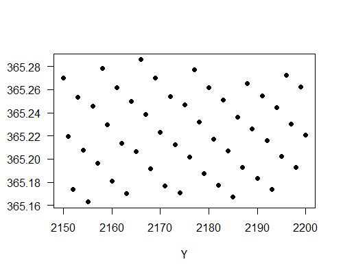
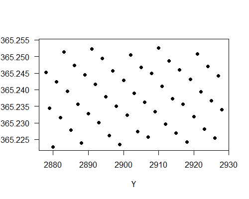
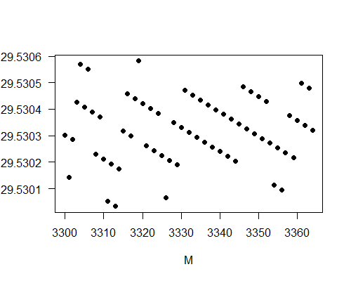

返回农历编算法则
初稿: 2018年10月 最近一次重大修订: 2019年4月
看了农历的编算法则后，也许读者会感到疑惑:为什么要这样编制农历?
阴阳历的重点是既要考虑月亮盈亏周期(朔望月)，也要照顾季节交替周期(回归年)。法则三显然是为了照顾月相。把朔日定为初一，保证初一看不见月亮，农历月的各日也大致有相同的月相，例如望(满月)发生在每月的十六日左右。法则四和法则五则是为了使农历月份不偏离季节。把冬至定在十一月，保证十一月是冬天，因此十一月又称「冬月」。但是冬至与月相无关，某年的冬至可以发生在朔日，另一年却可以发生在朔日前一天(又称「晦日」)。结合法则三，可推断冬至可以在十一月初一，也可以在十一月最后一日。所以冬至在农历有三十天的浮动，而在公历只有三天浮动。
顺治二年(1645年)历法改革前，农历的月份与中气有一一对应关系，例如正月必含雨水，二月必含春分等。顺治历改后，这样的对应关系仍然在大多数时候成立，但会有少数例外，这点在二十四节气网页有详细说明。然而即使在那些少数例外里，中气也只是偏离了对应月份仅仅一天而已，因此可以说所有中气在农历有约三十天的浮动。所有二十四节气在公历里只有三天浮动，比农历小得多，这是农历要兼顾阴阳两周的代价。
中国在春秋战国时已发现235(=19×12+7)个朔望月与19个回归年的时间非常接近，于是采用十九年七闰法编制农历，即在十九个农历年里放置七个闰月。古时称十九为章岁，七为章闰。后人把章岁和章闰合称为闰周。
有不少书籍和文章说农历用十九年七闰法来兼顾阴阳两周，谈到如何在十九年里加七个闰月时就说以无中气的月份定为闰月。或许读者会感到疑惑:以无中气定闰月为什么能保证在十九年里置七个闰月?答案是「不能保证」!首先，「无中气」置闰法在顺治历改后已废除，在现行置闰法则下，无中气的月份虽然大多数确是闰月，但有少数例外。再则十九年七闰法其实在南北朝末期到隋唐间基本上已废除，原因是19个回归年比235个朔望月短约二小时，用十九年七闰法制定的历法(例如犹太历)在228年会有一日偏差。
战国至魏晋期间中国的历法确是采用十九年七闰法，自汉武帝太初元年(公元前104年)起开始采用无中气法设置闰月。唐朝以前的历法用平朔法计算合朔，即假设月亮和太阳在天空运行速度是均匀的，两合朔之间的时间间隔是常数。南北朝以前的历法一般采用的回归年与朔望月的比例是235:19，所以19岁正好有235个月。每岁有12个中气，19岁就有228个中气，235=228+7，所以有七个月不含中气，因此以无中气法置闰能保证十九年有七个闰月。
后来因观测精度提高，发现十九年七闰法稍嫌粗糙，于是废弃了回归年:朔望月=235:19的比例。例如南北朝时期祖冲之创制的《大明历》实行三百九十一年一百四十四闰，具体做法是取回归年:朔望月=4836:391，4836 = 391×12 + 144，用无中气法置闰得391年144闰。这称之为「破章法」，即打破章闰之法，第一部采用破章法的历法是《玄始历》(600年221闰)，由北凉国太史著，在北涼行用了28年，在北魏行用了71年。到了唐朝，合朔计算改用定朔，两合朔的时间间隔不再是常数，到了清朝，连二十四节气也改用定气法计算，两中气的时间间隔也不再是常数，无中气法也要修改成现行的置闰法，这样更不能保证十九年有七个闰月。
虽然闰周只是近似周期，细看按现时置闰法则的闰月分布，不难发现闰月规律大致符合十九年周期。下表列出从农历N1930到N2500几百年间的闰月，分三十行每行七栏排列，每行代表一个闰周的闰月。如前述，法则一在1929年才实施，所以表列的年份从1930年起，以确保所列的闰月都是按相同法则而定。
| 闰周 | 农历年: 闰月 | ||||||
|---|---|---|---|---|---|---|---|
| 1 | N1930: 六 | N1933: 五 | N1936: 三 | N1938: 七 | N1941: 六 | N1944: 四 | N1947: 二 |
| 2 | N1949: 七 | N1952: 五 | N1955: 三 | N1957: 八 | N1960: 六 | N1963: 四 | N1966: 三 |
| 3 | N1968: 七 | N1971: 五 | N1974: 四 | N1976: 八 | N1979: 六 | N1982: 四 | N1984: 十 |
| 4 | N1987: 六 | N1990: 五 | N1993: 三 | N1995: 八 | N1998: 五 | N2001: 四 | N2004: 二 |
| 5 | N2006: 七 | N2009: 五 | N2012: 四 | N2014: 九 | N2017: 六 | N2020: 四 | N2023: 二 |
| 6 | N2025: 六 | N2028: 五 | N2031: 三 | N2033: 十一 | N2036: 六 | N2039: 五 | N2042: 二 |
| 7 | N2044: 七 | N2047: 五 | N2050: 三 | N2052: 八 | N2055: 六 | N2058: 四 | N2061: 三 |
| 8 | N2063: 七 | N2066: 五 | N2069: 四 | N2071: 八 | N2074: 六 | N2077: 四 | N2080: 三 |
| 9 | N2082: 七 | N2085: 五 | N2088: 四 | N2090: 八 | N2093: 六 | N2096: 四 | N2099: 二 |
| 10 | N2101: 七 | N2104: 五 | N2107: 四 | N2109: 九 | N2112: 六 | N2115: 四 | N2118: 三 |
| 11 | N2120: 七 | N2123: 五 | N2126: 四 | N2128: 十一 | N2131: 六 | N2134: 五 | N2137: 二 |
| 12 | N2139: 七 | N2142: 五 | N2145: 四 | N2147: 十一 | N2150: 六 | N2153: 五 | N2156: 三 |
| 13 | N2158: 七 | N2161: 六 | N2164: 四 | N2166: 十 | N2169: 六 | N2172: 五 | N2175: 三 |
| 14 | N2177: 七 | N2180: 六 | N2183: 四 | N2186: 二 | N2188: 六 | N2191: 五 | N2194: 三 |
| 15 | N2196: 七 | N2199: 六 | N2202: 四 | N2204: 九 | N2207: 六 | N2210: 四 | N2213: 三 |
| 16 | N2215: 七 | N2218: 五 | N2221: 四 | N2223: 九 | N2226: 七 | N2229: 五 | N2232: 三 |
| 17 | N2234: 八 | N2237: 五 | N2240: 四 | N2242: 十一 | N2245: 六 | N2248: 五 | N2251: 三 |
| 18 | N2253: 七 | N2256: 六 | N2259: 五 | N2262: 正 | N2264: 七 | N2267: 五 | N2270: 三 |
| 19 | N2272: 八 | N2275: 六 | N2278: 四 | N2281: 二 | N2283: 六 | N2286: 五 | N2289: 三 |
| 20 | N2291: 七 | N2294: 六 | N2297: 四 | N2300: 二 | N2302: 六 | N2305: 五 | N2308: 三 |
| 21 | N2310: 七 | N2313: 六 | N2316: 四 | N2318: 十 | N2321: 七 | N2324: 五 | N2327: 三 |
| 22 | N2329: 八 | N2332: 六 | N2335: 四 | N2338: 三 | N2340: 七 | N2343: 五 | N2346: 四 |
| 23 | N2348: 八 | N2351: 六 | N2354: 五 | N2357: 正 | N2359: 七 | N2362: 五 | N2365: 四 |
| 24 | N2367: 八 | N2370: 六 | N2373: 五 | N2376: 二 | N2378: 七 | N2381: 五 | N2384: 四 |
| 25 | N2386: 十 | N2389: 六 | N2392: 四 | N2395: 二 | N2397: 六 | N2400: 五 | N2403: 三 |
| 26 | N2405: 八 | N2408: 六 | N2411: 五 | N2414: 二 | N2416: 七 | N2419: 五 | N2422: 三 |
| 27 | N2424: 八 | N2427: 六 | N2430: 四 | N2433: 三 | N2435: 七 | N2438: 五 | N2441: 四 |
| 28 | N2443: 八 | N2446: 七 | N2449: 五 | N2452: 三 | N2454: 八 | N2457: 五 | N2460: 四 |
| 29 | N2462: 八 | N2465: 六 | N2468: 五 | N2471: 三 | N2473: 七 | N2476: 五 | N2479: 四 |
| 30 | N2481: 十 | N2484: 六 | N2487: 五 | N2490: 三 | N2492: 七 | N2495: 五 | N2498: 四 |
从表中可见闰月确是大致符合十九年周期，例如每一栏的年份确是大多数相差十九年，但有若干例外。粉红色的方格表示闰月的年份偏离了十九年的规律，例如第三闰周的最后一个闰月早了几个月出现。每一栏的闰月也大致上闰同一个月，但也有例外。黄色方格表示闰月出现的月份「错了」，意思是说闰月的月份与其在此栏的其他闰月有颇大偏差。例如在第六闰周里，N2033的闰月出现在闰十一月，而该栏的其他闰月一般是闰七月、闰八月或闰九月。有趣的是第四栏的闰月在第十七闰周前一般是闰七月、闰八月或闰九月，出见了一连串「错误」的闰月后，索性「错到底」，到了第十七闰周以后改为闰正月、闰二月或闰三月。这些偏离闰周的「异常情况」显示了闰周只是闰月的近似周期，要使农历不偏离阴阳两周，在几百年内需要有若干闰月打破闰周的规律。
从表中可见自1930年后闰正月会首次出现在N2262，其实这是自顺治历改(1645年)后首次出现的闰正月，这点在前新加波国立大学数学系教授Helmer Aslaksen(现任挪威奥斯陆大学副教授)撰写的中国历法中的数学一文中指出，我的独立计算与他的结果相符。
最后要指出目前不能很准确计算几百年后的朔和二十四节气的UTC+8时刻，这是因为地球自转不均匀，以致难以准确预测几百年后会有多少闰秒加到UTC上。公元2200年后的时间计算或会有几分钟误差，如果朔或节气时间发生在离午夜零时几分钟之内，朔日和节气日期或会有一日偏差，这一日之差一般不会影响闰月的编排，但在少数的情况下或会改变闰月，所以上表列出的数据可能有一两个会有错，但不会影响闰月的整体分布。
乍看农历编算的法则，似乎不易从中推出农历年和农历月的平均周期。其实要估计农历年月的平均日数不难:农历月的平均长度应接近朔望月的平均值29.530589日，而农历年的平均长度应接近回归年365.2422日。这估计是用反证法而得。假设农历月的平均长度与朔望月的平均值有颇大偏差，则朔的平均时刻在农历月里会渐渐漂移，最终会漂离初一日，但这与法则三相悖，所以原先的假设不成立。同理，假设农历年的平均值颇大地偏离回归年，则冬至的平均时刻在农历十一月会渐渐漂移，最终会漂离十一月，但这与法则四相悖，所以原先的假设不成立。这样的论述只是估算而不是严格证明，其一是因为平均值的运算没有准确界定，其二是朔望月平均值和回归年都随时间而变。
这里再展示好一点的计算。用FY+k(k是整数)表示农历年NY+k正月初一UTC正午的儒略日数(所以FY+k是整数);用WY+k表示在公历Y+k年冬至时刻的儒略日数(所以WY+k一般不是整数);设定ΔFY+k=FY+k - WY+k-1，是从Y+k-1年的冬至到农历年NY+k正月初一UTC正午的日数。农历年从NY到NY+n这n年的平均日数是
Y = (FY+n+1 - FY) / n = (WY+n - WY-1) / n + (ΔFY+n+1 - ΔFY) / n
(WY+n - WY-1) / n 是两冬至在Y-1到Y+n年间的平均日数，这个平均值接近回归年。正月初一是在冬至后的第二或第三个朔日，所以|ΔFY+n+1 - ΔFY|必定少于某常数U。已知正月初一在公历的1月20日和2月20日之间浮动，冬至在公历12月21日到12月23日左右浮动，所以U应接近30日。U的确实数字不重要，重要的是U是有限的。所以当n增加，|ΔFY+n+1 - ΔFY| / n 就会越来越少，从而推出农历年的平均日数接近回归年。用类似的方法可以得出农历月的平均日数接近朔望月。
现在来看看实际数据。据我的计算，从N1929到N2200这272农历年间有99340日，所以农历年在这272年的平均日数是99340/272=365.22日，比回归年短约半小时。然而农历年长度年年不同，其日数在353日与385日之间，标准偏差是14.31日。意味着平均值会随所取平均的年份而有所变化。例如农历年在N1929到N2199这271年间的平均日数是365.262日，在N1929到N2198这270年间的平均日数是365.1926日，这些变动主要来自(ΔF1930+n - ΔF1929)/n这项随着n变化而产生的变动，这变化会随取平均的年数增加而降底至零。下图显示农历年在N1929到NY的平均日数随着Y由2150到2200的变化。

可见农历年的平均值在365.16日到365.28日之间变动，这就是取270农历年左右的平均值的结果，要减少平均值的变化，可取更多农历年的平均值。下图显示农历年在N1929到NY的平均日数随着Y由2878到2928的变化。取平均值的农历年数高达一千。

图中可见农历年数目增加到一千左右时，其平均日数在365.224日与365.255日之间变动，变化幅度小了约四倍。这正与预期的一致，因为变动幅度应与n成反比，此处n是取平均的年数。农历年的平均日数确是接近回归年365.242日。
现在再看农历月的平均日数，从N1929到N2200这272农历年间有3364个农历月(包括闰月)，前面说过这272农历年有99340日，所以农历月在这3364个月的平均日数是99340/3364=29.5303日。为了知道这个平均值随月数的变化，下图显示农历月在N1930起算的第一个月到第M个月的平均值随着M由3300到3364的变化。

图中可见农历月平均值的变化远少于农历年的平均值变化，这是由两个因数造成。其一是农历每月的日数变化只有一日(二十九日或三十日)，其二是现在在取几千个数的平均值，而不是几百个数的平均值。农历月在这三千几个月的平均日数在29.5300日和29.5306日之间变动，确是接近朔望月的平均值29.530589日。
返回农历编算法则